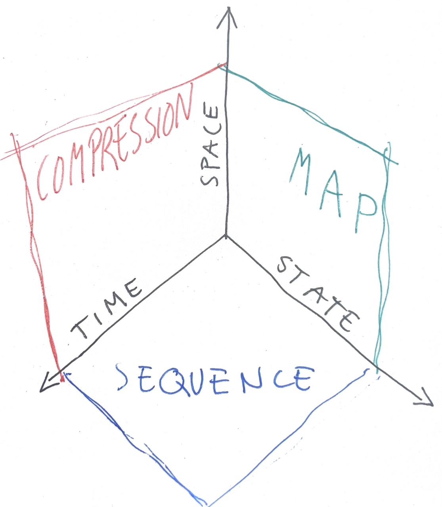
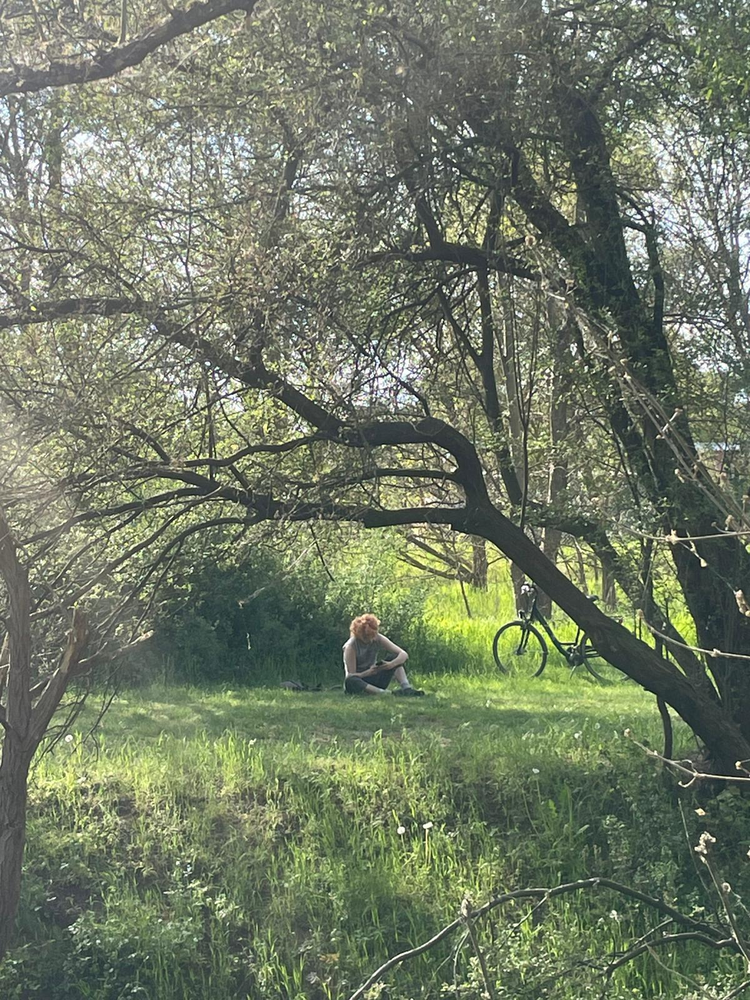

Erosion led to Entropy
In our research, the Panke River serves as a primary example of a territory in constant transformation. Shaped first by glacial melt, the landscape remains in motion and the river would slowly erode its own path, were it not for our anthropological impact. We observed that human attempts to freeze these meanders in time, in the name of efficiency, often backfire, because the landscape resists static control. This led us to a shift in perspective: we no longer see the territory as a fixed state, but as an entropic mixture. To map this entropy, we have to understand time as an active physical force, one that produces both change and superposition.

Space Time State
To make this process legible, we first organized the terrain through a 3-dimensional matrix of SPACE, TIME and STATE.



We drew the line of our transect at the fringe of the city, with the Panke in the middle, a strip of autobahn running left and train tracks right of it. As we meandered around our line we saw ourselves walking through time and space, only experiencing the state of our environment at the exact time of our observation. Had this always been peripherie, was it countryside before? Condumed by the ever growing Berlin?
State + Space = Map
resulting in single Layers
Space + Time = Superposition
resulting in Palimpseste
Paragraph about palimpsetste

Paragraph about Geological cut

Time + State = Sequence
resulting in TIMELINE

Pollenanalyse zur Frühgeschichte unserer Gegend
Das Untersuchungsgebiet zwischen Französisch Buchholz, der Panke-Niederung und Blankenburg nimmt innerhalb der Berliner Quartärgeologie eine Schlüsselrolle ein. Als Bestandteil der Barnim-Platte ist die Landschaft das Resultat glazialer und glaziofluvialer Prozesse, die das Relief sowie über die Substratverteilung auch die spätere slawische und mittelalterliche Besiedlung prägten.
Die Palynologie ist die zentrale Methode zur Rekonstruktion des Übergangs von Natur- zu Kulturlandschaft. Die Pollenbefunde der altslawischen Burg Blankenburg zeigen eine Dominanz von Pinus und Quercus.
Die Genese des Nordbarnims zeigt einen Übergang von klimatischen zu zunehmend anthropogenen Steuerungskräften. Im 7. Jahrhundert etablierte sich die slawische Burg Blankenburg mit selektiver Eichennutzung und intensivem Getreidebau.
Die Landschaft ist kein statisches Erbe, sondern das dynamische Resultat anthropogener Denudation und vegetationsgeschichtlicher Steuerung.
Overlay Overload
But when all three axes were combined, the center of the matrix collapsed into a void. The result was what we came to call an "overlay overload," in which too many layers rendered the drawing unreadable.

Space Time Transect
To address this problem, we developed the space-time transect. This instrument rests on two conceptual operations. First, we flatten spatial depth: the vertical space of a traditional map is compressed until geography becomes a single horizontal line of distance, x. Then we replace the vertical axis with time, t.

Time cut us off
Between the Randstreifen of the A114 and the Randstreifen of the straightened Panke lies a small detached piece of settlement, which proves how little the GDR cared about whatever stood in the way of its infrastructure prestige.



References
accompanying literature:


References:
to be continued